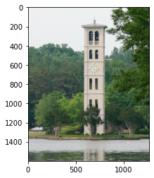
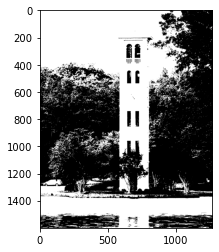
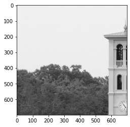
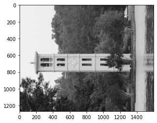

In this section, we will discuss the most common modalities of data and how to work with them in Python.
There are too many data modalities to eumerate an exhaustive list. Each data modality has its own unique characteristics and often require specialized methods to process and analyze. Study and analysis of many data modalities is an area of research within itself. For example, Computer Vision is the area of research that deals with images and videos. Speech processing is the area of research that deals with sounds. Natural Language Processing (NLP) is the area of research that deals with text.
Some common modalities and their associated areas of research are:
Text: Natural Language Processing, Computational Linguistics
Images: Computer Vision, Digital Image Processing
Sounds: Digital Signal Processing (DSP)
Graphs: Graph Theory, Network Theory
Time Series: Time Series Analysis
Geographic: Geographic Information Systems (GIS), Spatial Computing.
Text
Text is arguably the most ubiquitous non-numeric modality of data. Most of the data on the internet is text. Text data generally exists as a collection of documents called corpus, where each document is one or more sentences.
Bag of Words
Text data can be encoded into a number of different numeric representations. The most common is the Bag-of-Words (BoW) representation, which is closely related with One-Hot Encoding.
In the BoW representation, each row represents a document and each column represents a word in the vocabulary. The vocabulary is the list of all unique words in the corpus. The corpus is the collection of all the documents. A document is a sequence of words. The value in the cell at \(i\)th row and \(j\)th column represents the number of times the word \(j\) appears in document \(i\).
Creating a Bag of Words representation for a corpus generally entails the following steps:
Tokenization: Split each document into a sequence of tokens (words).
Create Vocabulary: Create a list of all unique tokens (words) for all documents in the corpus. Often words are normalized by converting all words to lowercase and removing punctuation.
Create Document Vectors: Create a vector for each document in the corpus. The vector is the same length as the vocabulary. The value in each cell of the vector is the number of times the word in the corresponding column appears in the document.
Create Document-Term Matrix: Create a 2D array where each row represents a document and each column represents a word in the vocabulary. The value in the cell at \(i\)th row and \(j\)th column represents the number of times the word \(j\) appears in document \(i\).
The image below shows a bag-of-words representation of a corpus of two documents. The vocabulary is the list of words on the left. The corpus is the 2D array of numbers on the right.
## Networks
Networks are a data structure that consists of a set of **nodes** (vertices) and a set of **edges** that relate the nodes to each other. The set of edges describes relationships among the vertices. Graphs are used to model many real-world systems, including computer networks, social networks, and transportation systems.
```{figure} https://raw.githubusercontent.com/fahadsultan/csc272/main/assets/network.png
---
width: 40%
align: center
---
Schematic of an example social network
There are two common ways to represent a graph as a matrix: 1. Adjacency Matrix and 2. Edge List.
The first way is to use an Adjacency matrix, which is a matrix where each row and column represents a vertex. If there is an edge from vertex \(i\) to vertex \(j\), then the entry in row \(i\) and column \(j\) is 1. Otherwise, the entry is 0. For example, the following matrix represents a graph with 4 vertices and 4 edges:
Network above encoded in Adjacency Matrix representation
<!-- ### Edge List -->
The **second** way to represent a graph as a matrix is to use an **Edge list**. An edge list is a list of pairs of vertices that are connected by an edge. For example, the following edge list represents the same graph as the adjacency matrix above:
<!--
$$
\begin{bmatrix}
0 & 1 \\
0 & 3 \\
1 & 2 \\
2 & 3 \\
\end{bmatrix}
$$ -->
```{figure} https://raw.githubusercontent.com/fahadsultan/csc272/main/assets/edgelist.png
---
width: 30%
align: center
---
Network above encoded in **Edge List** representation
Images
An image is a 2D array of pixels. Each pixel is a 3D vector of red, green, and blue (RGB) values. The RGB values are usually represented as integers between 0 and 255. The RGB values are used to represent the color of the pixel. For example, a pixel with RGB values of (255, 0, 0) is red, (0, 255, 0) is green, and (0, 0, 255) is blue. A pixel with RGB values of (0, 0, 0) is black and (255, 255, 255) is white.
In this notebook, we will learn how to read and write images, and how to manipulate them.
import numpy as npimport matplotlib.pyplot as pltimport pandas as pd # Read an imageimg = plt.imread('https://raw.githubusercontent.com/fahadsultan/csc272/main/data/belltower.png');plt.imshow(img);
/var/folders/l9/y8y3rmys2sl93tzzph3dl7jw0000gr/T/ipykernel_15810/3162821737.py:6: MatplotlibDeprecationWarning: Directly reading images from URLs is deprecated since 3.4 and will no longer be supported two minor releases later. Please open the URL for reading and pass the result to Pillow, e.g. with ``np.array(PIL.Image.open(urllib.request.urlopen(url)))``.
img = plt.imread('https://raw.githubusercontent.com/fahadsultan/csc272/main/data/belltower.png');

img.shape # (height, width, channels)
(1600, 1267, 3)
img[0,0,:] # RGB values of the first pixel
array([240, 241, 243], dtype=uint8)
# Convert to grayscaleimg_gray = img.mean(axis=2)img_df = pd.DataFrame(img_gray)plt.imshow(img_df, cmap='gray');plt.colorbar();
# Threshold the imageimg_thresh = img_gray >100plt.imshow(img_thresh, cmap='gray');

## Crop the imageimg_crop = img_df.iloc[:700, :700]plt.imshow(img_crop, cmap='gray');

# Rotate the imageimg_rot = img_df.transpose()plt.imshow(img_rot, cmap='gray');

Videos
Videos are a sequence of images. Within the context of videos, each image is called a frame. Most videos are a sequence of 24-30 frames per second.
Most modern videos are encoded using a variety of different codecs. A codec is a method of encoding and decoding a video. Some common codecs are H.264, MPEG-4, and VP9.
Audio
In this section, we will learn how to use representations of audio data in machine learning.
Audio files can be represented in a variety of ways. The most common is the waveform, which is a time series of the amplitude of the sound wave at each time point. The waveform is a one-dimensional array of numbers. The sampling rate is the number of samples per second.
To load an audio file, we can use the librosa library. The librosa.load function returns the waveform and the sampling rate.
You may have to install the `librosa` library using `!pip install librosa` in a new code cell for the code below to work.
The audio file can be downloaded from [this link](https://www2.cs.uic.edu/~i101/SoundFiles/StarWars3.wav).
Power Spectral Density (PSD) is a measure of the power of a signal at different frequencies. The PSD is calculated using the Fourier Transform. The PSD is a useful representation of audio data because it is often easier to distinguish different sounds in the frequency domain than in the time domain.
Geographic data is data that is associated with a location on the Earth. Geographic data is often represented as a latitude and longitude. The latitude is the distance north or south of the equator. The longitude is the distance east or west of the prime meridian .
Time series data is data that is collected over time. Time series data is often represented as a sequence of numbers. The numbers are usually collected at regular intervals. For example, the stock price of a company is collected every day at the close of the stock market.
url ="https://raw.githubusercontent.com/fahadsultan/csc272/main/data/elections.csv"data = pd.read_csv(url)wins = data[data['Result']=='win'].sort_values('Year')losses = data[data['Result']=='loss'].sort_values('Year')plt.plot(wins['Year'], wins['Popular vote']);plt.plot(losses['Year'], losses['Popular vote']);plt.legend(['Wins', 'Losses']);plt.title('Popular vote in US presidential elections');